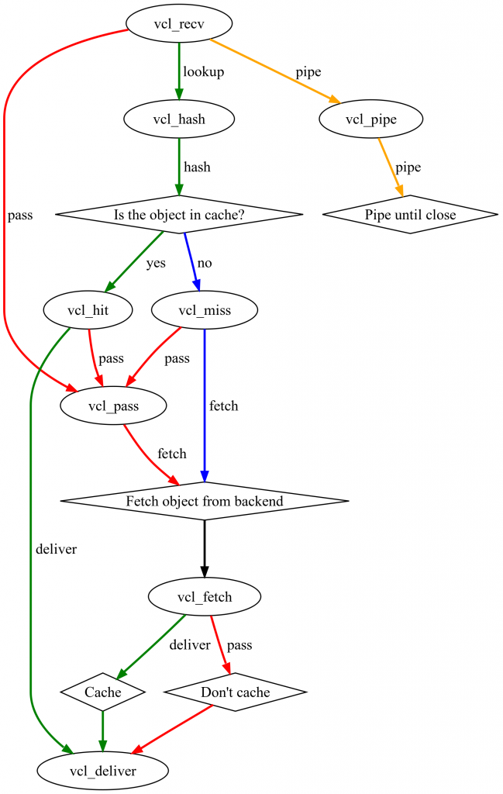
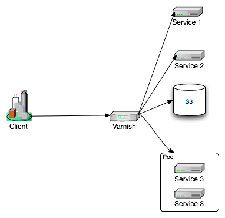

Varnish : un accélérateur de site web
Contents
| Software version | Varnish 2 |
|---|---|
| Operating System | Debian 6 |
| Website | Varnish Website |
| Last Update | 25/06/2013 |
| Others | |
{kind=link}
1 Introduction
Varnish est un serveur de cache pour serveurs Web. Ce qui rends les sites Internet beaucoup plus rapide. Il est également capable de faire du load balancing sur plusieurs serveurs web en backend ou encore du reverse proxy. En gros nous allons le placer en amont des serveurs Web pour intercepter les requêtes, mettre en cache ce qui est généré par les backends et resservir le contenu généré depuis son cache. Mais son fonctionnement peut aller plus loin.
Varnish se configure simplement grâce à deux types de fichiers. Le fichier de configuration de Varnish où nous allons définir certains paramètres internes et les fichiers VCL qui permettent de configurer le comportement de Varnish via une sorte de langage de programmation.
Le principe de Varnish s’appuie sur la machine à état suivante :

{kind=link}
Varnish permet d’intervenir au niveau de chacun des états pour effectuer des opérations sur HTTP ou sur lui-même. C’est cette finesse d’intervention qui permet à Varnish d’être véloce et complet.
Un client effectue une requête sur une ressource qui n’est pas en cache suivra le cheminement suivant :
{kind=link}
Si cette ressource est demandée à nouveau, le chemin suivi change car la ressource est maintenant en cache :
{kind=link}
Toutes ces étapes sont symbolisées en VCL par des “procédures standards” (vcl_recv, vcl_fetch, vcl_deliver… etc). Toutes ces procédures sont surchargables et nous pouvons aussi déclarer les nôtres qui seront appelées dans les procédures standards. Le langage VCL ne tolère aucun code orphelin, tout ce qui est déclaré doit être utilisé.
2 Installation
Sur Debian...toujours aussi simple :
| |
aptitude install varnish |
3 Configuration
3.1 La base
3.1.1 Les VCLs
Tout d'abord, dans le cas ou Varnish tournerait sur la même machine que votre serveur web, faites pointer votre serveur web actuel non pas sur un autre port (8080 par exemple), puis redémarrez le pour appliquer la nouvelle configuration.
Maintenant nous allons toucher à la configuration de Varnish pour lui dire sur quel serveur backend taper. Adaptez ces lignes à votre configuration :
| |
... backend default { .host = "127.0.0.1"; .port = "8080";} ... |
- 127.0.0.1 : le serveur web sur lequel Varnish doit rediriger le traffic
- 8080 : le port du serveur web en question
3.1.2 Le démon
3.1.2.1 Cache sur disque
Ensuite, nous allons toucher la configuration du serveur Varnish pour lui donner quelques informations supplémentaires :
| |
... # Should we start varnishd at boot? Set to "yes" to enable. START=yes[...] DAEMON_OPTS="-a :80 \ -b localhost:8080 \ -u varnish -g varnish \ -S /etc/varnish/secret \ -s file,/var/lib/varnish/$INSTANCE/varnish_storage.bin,1G"[...] |
- -a : le port sur lequel le serveur Varnish va écouter
- -b : le serveur web sur lequel Varnish doit rediriger le traffic
- -s : le fichier de cache de 1G situé sur le disque (moins bonnes performances qu'en RAM)
3.1.2.2 Cache en RAM
Vous avez peut être envie que votre cache se situe en RAM pour avoir des accès encore meilleurs ! C'est tout à fait possible :-). J'en ai profité pour rajouter quelques éléments pour optimiser le tout :
| |
... # Should we start varnishd at boot? Set to "yes" to enable. START=yes[...] DAEMON_OPTS="-a :80 \ -b localhost:8080 \ -S /etc/varnish/secret \ -p thread_pools=2 \ -p thread_pool_min=100 \ -p thread_pool_max=2000 \ -p thread_pool_add_delay=2 \ -p session_linger=50 \ -s malloc,512m"[...] |
- -a : le port sur lequel le serveur Varnish va écouter
- -b : le serveur web sur lequel Varnish doit rediriger le traffic
- -p thread_pools : insérez le nombre de cores sur votre machine
- -p thread_pool_min (default: 5) : Les threads inactifs sont inoffensifs. Ce nombre est multipliée par le nombre de pools de threads dont vous disposez, et le total devrait être à peu près ce que vous avez besoin pour fonctionner sur une journée normale.
- -p thread_pool_max (default 1000) : Le nombre maximal de threads est par limité par les descripteurs de fichiers disponibles, cependant, le placer trop haut n'augmentera pas les performances. Avoir un nombre de threads inactifs est raisonnablement inoffensif, mais ne n'augmentez pas ce nombre au-dessus de 5000 ou vous risquez d'avoir des problèmes avec les descripteurs de fichier ou pire encore.
- -p thread_pool_add_delay=2 (default 20ms): La réduction de l'option add_delay vous permet de créer des threads plus rapide ce qui est essentiel, spécialement au démarrage pour éviter de remplir la file d'attente et d'abandonner des requêtes.
- -p session_linger : pour éviter les context switch lorsque l'on burst le CPU.
- -s malloc : certainement l'option la plus intéressante ici, permet d'utiliser le cache en RAM. L'idéale est de prendre 80% de votre mémoire si possible.
Commentez ensuite le bloc VCL car nous venons de le remplacer :
| |
#DAEMON_OPTS="-a :6081 \ # -T localhost:6082 \ # -f /etc/varnish/default.vcl \ # -S /etc/varnish/secret \ # -s file,/var/lib/varnish/$INSTANCE/varnish_storage.bin,1G" |
Puis on redémarre Varnish :
| |
/etc/init.d/varnish restart |
et c'est bon :-)
3.2 Le Cache
Varnish propose un cache en mémoire et un cache sur disque. Mais il faut faire un choix, les deux ne sont pas cumulables. Le cache accepte à peu près tout ce qui passe dans les mains de Varnish (pages HTML, fichiers statics, flux de données en JSON… etc), à partir du moment où l’on déclare l’objet cachable et qu’il a une TTL.
Le cache est alimenté juste après l’étape “Fetch”, en réalité c’est juste après la récupération de la donnée sur le backend. C’est à cet endroit que l’on va faire toutes les modifications de l’entête HTTP de la ressource cachée. Faire ces modifications au niveau du “Fetch” va permettre de garantir une entrée cache propre (ne pas avoir plusieurs entrées cache car une même ressource va avoir un payload différent). De plus l’objet est stocké dans le cache avec son entête HTTP, il est donc plus efficace de traiter une fois pour toute l’entête et la resservir avec l’objet.
Comme nous le verrons plus loin, la compression d’objet influe aussi sur les performances du cache. Il est préférable de stocker un objet compressé et laisser Varnish le délivrer compressé ou non suivant l’entête “Accept-Encoding”.
La définition correct de la TTL d’un objet pour manager le cache-control est un élément important de Varnish. Nous pouvons contrôler le cache de façon précise en définissant la TTL pour un type de ressource ou pour une url par exemple :
| |
...
if(beresp.ttl > 0s){
unset beresp.http.Expires;
if ( req.backend == backend_S3 ) {
set beresp.http.Cache-Control = "public, max-age=60";
set beresp.ttl = 60s; } else {
set beresp.http.Cache-Control = "public, max-age=7200";
set beresp.ttl = 2h; }
}
... |
Ici nous demandons à Varnish de cacher sur 60 secondes tout ce qui vient de le backend “backend_S3” et le reste sera caché deux heures.
Le cache peut se manager de deux façons différentes :
- Via des appels HTTP par la méthode PURGE et en gérant des ACLs pour sécuriser l’appel.
- Via les “Bans” que l’on peut inclure dans le VCL ou effectuer via varnishadm.
3.3 La Compression
Depuis la version 3.0, Varnish a la possibilité de compresser et décompresser des ressources. Cette fonctionnalité est importante pour 3 raisons :
- Économiser de la bande passante entre le backend et Varnish.
- Économiser de la place dans le cache de Varnish surtout quand il est en mémoire.
- Économiser de la bande passante entre Varnish et le Client.
Elle peut être activée simplement en harmonisant l’entête “Accept-Encoding” et en positionnant la variable “do_gzip” au niveau du backend ou de la réponse du backend. Pour le reste Varnish va adapter la réponse (objet compressé ou non) au client en s’appuyant sur le “Accept encoding” de la requête.
Il est bien sûr évident que la stratégie de compression doit être adaptée au type d’objet. On ne compressera pas un objet déjà compressé (gif, jpg…etc) :).
3.4 Le Loadbalancing
Varnish peut gérer des backends de tous horizons. Avec des sites de plus en plus chargés, il est capable d’offrir la possibilité de faire du loadbalancing. Varnish dispose de 3 types de loadbalancing qui sont appelés “Director” :
- RoundRobin
- Client (permet de faire du sticky session sur n’importe quel élément du header).
- Random (disponible… utile c’est une autre histoire).
Varnish sait gérer l’éviction d’un backend lorsqu’il est indisponible. Cette fonctionnalité est d’autant plus utile quand nous activons le “probe” sur les backends.
| |
...
backend server1 {
.host = "server1.deimos.fr";
.probe = {
.url = "/";
.interval = 5s;
.timeout = 1s;
.window = 5;
.threshold = 3;
}
}
... |
Varnish dispose aussi d’un mécanisme pour palier complètement à la défaillance d’un backend ou d’un Director. Nous appelons cela “Grace mode” ou “Saint mode”. Ces termes cachent la possibilité de servir un contenu caché même x minutes après la TTL en cas de non réponse d’un serveur. Il est aussi capable d’aiguiller une requête vers un autre serveur répondant correctement quand le serveur cible initial donne des réponses HTTP 500 à cause d’une trop grande charge par exemple.
3.5 Reverse Proxy
Nous avons vu que Varnish se place devant toute notre infrastructure. Il va permettre de masquer complètement l’architecture déployée en utilisant toute la puissance de Reverse Proxy qu’il met à notre disposition.

{kind=link}
En fait, il nous permet de faire un découplage complet entre l’organisation des URIs d’appels et l’organisation de leurs traitements sur l’infrastructure.
Voici un exemple d’une requête cliente que nous arrivons à aiguiller avec Varnish vers un bucket S3 public du nom de “ressources” et l’aiguillage prend en compte ce qu’il y a dans le nom du host de la requete :
| |
...
set req.backend = backend_s3;
if(req.url == "/ressources1.xml") {
set req.url = regsuball(req.http.host,
"^(?:.*[.])?([a-z]+)[.](?:net|com)$", "/ressource1.\1.xml");
}else if(req.url == "/ressource2.txt") {
set req.url = regsuball(req.http.host,
"^(?:([a-z]+)[0-9]*[.])(?:([a-z]+)*[.])[a-z]+$","/ressources.\1.\2.txt");
}
set req.http.host = "resources.s3.amazonaws.com";
backend backend_s3 {
.host = "ressources.s3.amazonaws.com";
.port = "80";
.connect_timeout = 5s;
.first_byte_timeout = 3s;
.between_bytes_timeout = 2s;
.max_connections = 1000;
}
... |
3.6 Sécuriser et nettoyage HTTP
Le protocole HTTP permet d’utiliser plusieurs types de méthodes (GET, POST, DELETE… etc). Ces méthodes peuvent être utilisées de différentes manières pour déclencher des actions spécifiques (cas de services REST) sur les services abrités sur les backends. Or la protection au niveau HTTP de ce genre de services est assez fastidieuse côté serveurs d’applications. Varnish va permettre de filtrer précisément ce qui doit passer et pour quelle utilisation. Nous allons donc limiter les effets de bords.
Imaginons que nous avons un service accessible uniquement en GET /service1/ et un deuxième /service2/ accessible lui en GET et POST nous allons écrire quelque chose comme ceci :
| |
...
if (req.request != "GET" && req.request != "POST"){
call error;
}
if (req.url ~ "^/service2"){
call service2;
}
if(req.request == "POST"){
call error;
}
if (req.url ~ "^/service1"){
call service1;
}
call error;
... |
Dans cet exemple nous interdisons systématiquement tout ce qui n’est pas méthode GET ou POST. Ensuite pour une url qui commence par /service2 nous allons vers la routine qui va traiter le payload pour ce service. Puis nous bannissons la méthode POST et nous traitons les urls avec /service1 et enfin nous bannissons le reste.
Avec cette méthode aucune requête non prévue peut remonter vers un backend. Nous avons deux avantages :
- Le code pour traiter les cas aux limites sera plus simple.
- Une majorité d’erreurs ne remonteront pas vers le backend, celles-ci ne provoqueront donc aucune exception ni saturation.
Dans un deuxième cas de figure il peut être intéressant de normaliser les entêtes HTTP. Prenons l’exemple de l’Accept-Encoding. Varnish préconise de le normaliser ainsi :
| |
...
if (req.http.Accept-Encoding) {
if (req.http.Accept-Encoding ~ "gzip") {
set req.http.Accept-Encoding = "gzip";
} elsif (req.http.Accept-Encoding ~ "deflate") {
set req.http.Accept-Encoding = "deflate";
} else {
remove req.http.Accept-Encoding;
}
}
... |
Tout simplement pour éviter de créer des entrées cache différentes pour un même payload uniquement parce que tous les clients n’écrivent pas cet entête de la même façon.
Nous pouvons aussi enlever certains headers qui peuvent donner trop d’informations sur l’infrastructure. Pour S3 par exemple nous allons passer ces commandes dans le fetch :
| |
...
unset beresp.http.x-amz-id-2;
unset beresp.http.x-amz-request-id;
unset beresp.http.x-amz-meta-s3cmd-attrs;
unset beresp.http.x-amz-meta-s3fox-filesize;
unset beresp.http.x-amz-meta-s3fox-modifiedtime;
... |
Ou positionner des entêtes plus personnelles :
| |
...
set beresp.http.Server = « ServeurPerso »;
... |
La dernière petite chose à penser pour le nettoyage réside dans le positionnement d’un content-type correct pour toutes des ressources. Cette opération se fait de la même manière que pour le nettoyage des headers en positionnant “set beresp.http.Content-Type” par groupe de ressources.
De par ces fonctionnalités, Varnish est capable d’assurer l’orchestration de la haute disponibilité d’une architecture. Il est capable de détecter les backends défaillants et même de les remplacer en s’appuyant sur son cache. Il va les protéger en prenant en compte une grande partie de la gestion des erreurs 404.
3.7 Uniformisation des Logs d’accès
Le process “varnishd” ne produit aucun log. Il se contente d’écrire les informations dans des segments de mémoire partagée. Ces segments sont consommés par des outils comme varnishadm, varnishlog ou encore varnishncsa. C’est principalement varnishncsa qui nous intéresse. C’est ce process qui va lire les informations et créer un fichier de log au format NCSA.
L’avantage ici est énorme. Nous pouvons décharger les serveurs d’applications et front http de la production de ces logs. De plus ces logs seront moins éparpillés (quoi que, avec l’utilisation de syslog-ng ça ne soit pas un problème). Enfin les logs seront tous normalisés qu’ils soient sur Apache, Tomcat, JBoss ou encore lighttp et NginX. Nous pouvons donc penser uniquement aux traitements que nous allons bien pouvoir leur faire subir et ne plus passer du temps à tout reformater. Cette considération prend tout son sens quand on commence à atteindre plusieurs gigas de logs d’accès par jour.
Depuis la version 3.0, Varnishncsa permet de ne pas suivre la norme NCSA et nous laisse le choix du format de sortie.
4 Ressources
http://blog.bigdinosaur.org/adventures-in-varnish/
http://decrypt.ysance.com/2012/02/le-web-accelere-avec-varnish/
https://www.varnish-cache.org/trac/wiki/Performance
http://kristianlyng.wordpress.com/2010/01/26/varnish-best-practices/